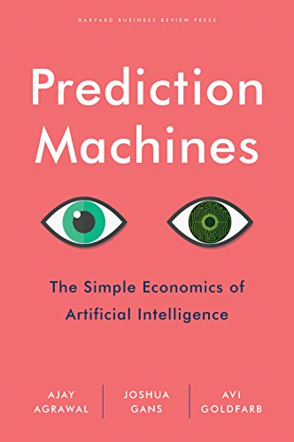

The Simple Economics of Artificial Intelligence
Authors: Ajay Agrawal, Joshua Gans, Avi Goldfarb
Purchase on: Amazon
📖 The book in 3 sentences
This book gives you a structure for identifying the key trade-offs and how to evaluate the pros and cons in order to reach the best decision for you.
The drop in the cost of prediction will impact the value of other things, increasing the value of complements (data, judgment, and action) and diminishing the value of substitutes (human prediction).
A prediction is not a decision. Making a decision requires applying judgment to a prediction and then acting. Before recent advances in machine intelligence, this distinction was only of academic interest because humans always performed prediction and judgment together. Now, advances in machine prediction mean that we have to examine the anatomy of a decision.
👉 Why it matters
Authors built the Creative Destruction Labs (CDL).
You need to identify the core prediction at the heart of the task, and this can require AI insight. The effort to answer this question often initiates an existential discussion among the leadership team: “What is our real objective, anyhow?” Prediction requires a specificity not often found in mission statements. For a business school, for example, it is easy to say that they are focused on recruiting the “best” students, but in order to specify the prediction, we need to specify what “best” means—highest salary offer upon graduation? Most likely to assume a CEO role within five years? Most diverse? Most likely to donate back to the school after graduation? Even seemingly straightforward objectives, like profit maximization, are not as simple as they first appear. Should we predict the action to take that will maximize profit this week, this quarter, this year, or this decade? Companies often find themselves having to go back to basics to realign on their objectives and sharpen their mission statement as a first step in their work on their AI strategy.
💡 My top 3 quotes
“Reframing a technological advance as a shift from expensive to cheap or from scarce to abundant is invaluable for thinking about how it will affect your business.”
“The drop in the cost of prediction will impact the value of other things, increasing the value of complements (data, judgment, and action) and diminishing the value of substitutes (human prediction).”
📚 Summary + Notes
Placeholder
“Today, business creates value through innovation, the product of human creativity. When creativity replaces muscle power and knowledge manipulation as key factors of economic production, we will witness a creativity revolution, moving one step beyond the knowledge revolution described by management guru Peter Drucker.” - Ming Zeng
For more about this very interesting book by Ming Zeng, see my notes on the book “Smart Business”
Introduction
As economists, the authors claim that it is part of their job to strip away the hype around important technological changes to identify their true value. According to them, AI is a prediction technology, not actual intelligence, and predictions are inputs to decision making.
For example, Alexa doesn’t “know” the capital of Delaware, but is able to predict that, when asked such a question, people are looking for a specific response: “Dover.”
Another way of putting this is that AI reduces the cost of prediction.
Creative Destruction Labs (CDL) leverages this insight in such a way that each startup they work with focus on exploiting the benefits of better prediction For instance, Deep Genomics tries to improve the practice of medicine by predicting what will happen in a cell when DNA is altered, and Chisel improves the practice of law by predicting which parts of a document to redact.
Economics provides a perfect framework for understanding the trade-offs underlying any decision and the role of artificial intelligence. While many are still trying to grasp AI, the economic principles and implications of changes to cost are clearly defined.
It is not the purpose of this book to describe the best strategy for any company, the emphasis is on trade-offs. For example, more data usually means less privacy, more speed means less accuracy, and more autonomy means less control. It is up to the decision-makers to use the structure given in this book to analyze these trade-offs in order to make their decisions.
Cheap changes everything
At its core, this book is about strategic thinking using economic principles. It starts by giving past examples of past technological innovations seen as the fall in price of something:
The rise of the internet was a drop in the cost of distribution, communication, and search.
Google made search cheap.
Computers made arithmetic cheap.
The consequences for these changes in price was that substitutes like the Yellow Pages in search lost value while an increase in search (due to a lower price) meant that certain companies that relied on others finding them prospered.
In the case of arithmetic, a reduction in price also means increased demand in new areas were arithmetic was not traditionally used. For example, photography used to be mainly chemistry and then became highly digital.
As mentioned earlier, the authors view AI as prediction technology. Prediction is the process of filling in missing information. Prediction takes information you have, often called “data,” and uses it to generate information you don’t have.
Just like with arithmetic, we can then expect to see problems fro other domains being transformed into prediction problems. A clear example of this is transportation.
Traditionally, people tried to program autonomous vehicles using conditional logic. This system was very limited and brittle because it is practically impossible for humans to program rules for all the scenarios needed. A breakthrough came when this problem was translated into a prediction problem. At any given moment, what would a human do?
Apart from changes in demand and impact on substitutes, economic theory also points us toward complements. We would expect complements to have higher value.
A practical example of this would be that if the cost of prediction drops, then the value of data collection technology should increase (like Israeli startup Mobileye in the case of autonomous vehicles, which was bought by Intel for more than $15 billion).
The drop in the cost of prediction will impact the value of other things, increasing the value of complements (data, judgment, and action) and diminishing the value of substitutes (human prediction).
This reminded me about a comment in the book A more beautiful question where the author argues that in today’s world information and answers have become commodities. This drop in the cost of accessing information has increased the value of asking good questions, which could be a key component of good judgement. For more about the value of questions, see my notes on the book “A more beautiful question”
Part One: Prediction
Why it’s called intelligence
The first few chapters explore fundamental concepts like machine learning and how it is different to traditional statistics and algorithms based on if-then conditional rules.
Manual coding of rules doesn’t work well in very complex environments. Effective automatic prediction puts programming upside-down such that we don’t have to write the whole program. Instead, we train a model that becomes the program we use for prediction and the improvements in performance are often transformational.
Data is the new oil
One of the main trade-offs when making strategic decisions about AI is connected to data and, more specifically, data acquisition.
Machine learning models depend on data for training. as a general rule of thumb, more and better data usually improves performance.
In economic terms, data is a key complement to prediction. It becomes more valuable as prediction becomes cheaper.
When considering prediction algorithms to solve a problem, it becomes important to consider what degree of data freshness might be needed, what type of data, how much data, and so on. For example, collecting data often, such as multiple times every hour, tends to be much more expensive than collecting data once a year.
So how do we answer these questions? Usually we find guidance by thinking about the prediction problem we are working on. If we need a model that is 99% accurate for it to be useful we’ll usually need much more data than if we only need to reach a 70% accuracy. There is a set of tools we can use for this called “power calculations”.
Business leaders also need to understand if data has increasing or diminishing returns at scale. Generally, if we have a lot of data then a few more data points would not add much value (diminishing returns), but in problems with many edge cases like recommendation systems there might be increasing value as we get access to data points that competitors will have a tough time obtaining.
The new division of labor
Strictly speaking, we use different types of resources to complete tasks or solve problems. To make effective strategic decisions we need to understand what tasks should be assigned to humans and which can be assigned to machines.
For example, psychologists Daniel Kahneman and Amos Tversky discovered with their Prospect Theory that humans are not good utility optimzers, we usually give too much weight to short-term impact and more on losses than gains.
Framing of information can lead to significantly different actions. When considering a surgery, Kahneman and Tversky found that 84% of physicians would go with surgery if they were told that “the one-month survival rate is 90 percent” compared to only 50% when they were told that “there is a 10 percent mortality in the first month”.
Unfortunately, as we can see in the experiment above, we are systematically biased and rely on multiple heuristics even when we are aware that they exist. Statistical thinking does not come naturally to us, machines would not change their behavior in this way.
Humans and machines are also well suited for different types of problems:
Known knowns. Wwe have rich data and machine prediction can work well.
Known unknowns. We know that we don’t have much data and this will impact performance of predictive models while humans are sometimes very good at predicting with limited data.
Unknown unknowns. When something has ever happened before, both humans and machines tend to be bad at making predictions.
Unknown knowns. Here the authors point out that there are times when prediction machines give us the wrong answers with a very high level of confidence. This usually happens when the machine does not understand the data-generating process. A common source for this is the presence of confounder variables, such that a naive prediction might suggest that increasing the price would lead to more rooms sold just because both of these events tend to happen together during tourist season.
Still, sometimes the best performance is obtained when humans and machines work together. This is because humans and machines tend to be good at different aspects of a prediction. For example, humans might be better at reducing false positives while the prediction model might be more suited for reducing false negatives.
The book presents an example of this when Harvard/MIT team of AI researchers won a contest in 2016 to detect breast cancer. Their deep learning algorithm had an accuracy of 92.5 percent and human pathologists were right 96.6 of the time. Combining their predictions, accuracy increased to 99.5%.
An important question for business leaders is how to combine human and machine predictions. The book cites a randomized controlled trial by Daniel Paravisini and Antoinette Schoar where a committee in a bank reviewing loan applicants were given the machine prediction before or after presenting their own assessment.
They found that both ways of working improved performance of their decisions, but their was an even higher improvement when the prediction was served in advance. This option empowered low-level managers with information to make more accurate decisions and needed less help from their superiors.
Presenting the score after the assessment gave high-level managers a tool to monitor the low-level managers and evaluate their decisions, which gave them an incentive to work harder and ensure that they were making high quality decisions.
A very effective way of combining predictions could also be through prediction by exception such that the machine automatically serves predictions for common events, but calls for human assistance when a rare event is presented and the model has low confidence in the predicted value.
Part 2: Decision making
Unpacking decisions
Decision making is a complex process and could be defined in multiple ways. The authors decide to split this process into a set of main components:
Inputs (data) used to make the decision
Prediction, as practically all real life decisions are made under uncertainty. As mentioned earlier, in this book prediction is defined as “the process of filling in missing information”.
Judgement, defined in the book as “the process of determining the reward to a particular action in a particular environment”.
Action. This is context-specific and generally produces an outcome with an associated reward or cost.
In other words, under this model, a decision maker would take into account certain information and apply judgement to a prediction so that an action can be chosen. Note that doing nothing and maintaining the status quo would also be considered an action.
It is important to make this distinction because when humans make decisions we usually perform prediction and judgement together and by understanding the different components we can apply the economic framework mentioned earlier. This means that we could take data, judgement and actions as complements to prediction. The value of these complements increases as the cost of prediction decreases.
We can also see machine prediction and human prediction as substitutes. This means that the value of human prediction falls as high quality machine prediction becomes cheap.
This has very powerful consequences. For example, when the cost of prediction is high we might often fall back to a default rule. So, if it is hard to predict who has been infected by a very contagious virus, we might rely on the hard rule of lock-down for everyone. As the cost of prediction falls, we can use it more often (demand increases) for more granular decisions compared to before. In the example above, if it is easy and cheap to identify who has been infected then we can ask only them to stay at home while everyone who is healthy and not contagious can continue life as usual.
If we take this a step further, we can even start to identify areas in business where a high cost of prediction has led us to a path of “satisficing”. One example of this is the existence of lounges at airports. They exist because it is hard to predict how long it will take to get to the airport and through to the gate. If the cost of predicting traffic, dangerous threats at the airport, and possible delays drop, then we could leave just in time to get to the gate and lounges would not be needed.
Cheap prediction makes judgement even more important because it allows us to define what our objective actually is and what value/reward we assign to each possible outcome of an action. In the case of algorithms, applying judgement can be seen as choosing the “reward function”.
The value of judgement
Choosing the reward function is a human process as we currently decide what is considered valuable or not. It is a key piece of decision making and as long as we are needed for this, humans still play a key role in the use of AI.
It is easy to confuse the use of AI in domains such as credit worthiness as simply prediction. Someone within the business has to make the decision of how much risk they are willing to carry at specific interest rates and this leads to completely different business models. This would be the example of a high-end platinum card vs an entry-level card for students.
Once this has been defined, judgement can be baked into software (like a threshold applied to the prediction made by a model) and the full process can be automated.
Judgement is usually expensive in time and effort, especially when the realm of possible outcomes is large and there is a high level of uncertainty. Uncertainty increases the cost of judgement because we don’t only need to think about the value of a possible outcome but also the cost of acting on a wrong prediction.
Predicting judgement
Of course, earlier it was mentioned that a lower cost of prediction would allow us to transform problems from other domains into prediction problems. So, wouldn’t it be possible for machines to learn to apply judgement by converting it into a prediction of “What would a human do in this situation?”
The authors remind us about the types of problems where machines are well suited or not. Machines are bad at predicting rare events due to the lack of data, and this is usually the case when we need to apply judgement.
Part 3: Tools
Deconstructing workflows
During the IT revolution, when thinking about where to use computers, many businesses could simply look for places where they were already doing a lot of manual computations and replace humans with computers.
Unfortunately, for many other companies it wasn’t as simple. Michael Hammer and James Champy published the book Reengineering the Corporation in 1993. They argued that for general-purpose technology like computers it is important to go back to the foundation and think about the true objective of the business. With this in mind they can then review their workflows to identify which tasks were truly needed to achieve their objective and evaluate if computers had a role in those tasks.
AI is also a general-purpose technology, so this book proposes that companies evaluating how to implement AI should break down the tasks in their workflows and identify the ones truly needed to achieve their objectives. Then they can estimate the ROI of either building or buying AI to leverage machine predictions for each task, order the tasks in terms of ROI and then start implementing from the top.
Decomposing decisions
Here the authors revisit the components of a decision and include additional components that are necessary for building automated prediction models. This makes up what they call the “AI canvas” used to understand the potential value of machine predictions:
- Action: What are you trying to do? A company like Atomwise wants to test molecules to help cure or prevent disease.
- Prediction: What do you need to know to make the decision? Atomwise predicts binding affinities of potential molecules and proteins.
- Judgement: How do you value different outcomes and errors? Atomwise and its customers decide the relative importance of a cure compare to the cost of potential side effects.
- Outcome: What are your metrics for task success? For Atomwise, did the test lead to a new drug?
- Input: What data do you need to run the predictive algorithm? Atomwise uses data on the characteristics of the disease proteins.
- Training: What data do you need to train the predictive algorithm? Atomwise employs data on the binding affinity of molecules and proteins, along with molecule and protein characteristics.
- Feedback: How can you use the outcomes to improve the algorithm to improve future predictions?
The canvas is valuable in the sense that it allows us to remember the different components and forces us to clearly describe each component. For example, when evaluating the trade-offs between cure and side effects, we are applying judgement and it becomes explicitly defined in the canvas. Also, knowing what we want to achieve and how helps us to identify what data we would need.
A seemingly simple thing such as identifying what we want to predict can often lead us to a more existential discussion around the question “What is our real objective?”
When human prediction and judgement are mixed there is more space for ambiguity, but when prediction is decoupled it forces us to be specific.
Some companies have to go back and review their mission statement as a first step in their AI strategy, and more often need to be specific in their objectives throughout the company.
Cassie Kozyrkov, Chief Decision Scientist at Google, has a great post on operationalization (“creation of measurable proxies for rigorously investigating fuzzy concepts”) here.
Operationalization is one way in which we can convert ambiguous objectives into something specific and measurable.
Job redesign
When computers made arithmetic cheap, spreadsheets didn’t become a threat to bookkeepers because they were the ones that made the computations manually before and now became the best suited to ask the right questions of the spreadsheets. In other words, they not replaced but rather empowered and augmented.
The implementation of AI tools generates four implications for jobs:
- Job augmentation, as in the example of spreadsheets and bookkeepers.
- Job contraction, as in fulfillment centers.
- Reconstitution of jobs, with some tasks added and others taken away, as with radiologists.
- Shift the emphasis on the specific skills required for a particular job as with bookkeepers
Part 4:
Chapter 15: AI in the C-suite
C-suite leadership must not fully delegate AI strategy to their IT department because powerful AI tools may go beyond enhancing the productivity of tasks performed in the service of executing against the organization’s strategy and instead lead to changing the strategy itself.
AI can lead to strategic change if three factors are present:
- there is a core trade-off in the business model (e.g., shop-then-ship versus ship-then-shop);
- the trade-off is influenced by uncertainty (e.g., higher sales from ship-then-shop are outweighed by higher costs from returned items due to uncertainty about what customers will buy);
- an AI tool that reduces uncertainty tips the scales of the trade-off so that the optimal strategy changes from one side of the trade to the other (e.g., an AI that reduces uncertainty by predicting what a customer will buy tips the scale such that the returns from a ship-then-shop model outweigh those from the traditional model).
Prediction machines will increase the value of complements, including judgment, actions, and data. The increasing value of judgment may lead to changes in organizational hierarchy.
Returning to the simple economics that underlies all the arguments in this book, prediction and judgment are complements; as the use of prediction increases, the value of judgment rises. Teams are increasingly bringing in new senior advisers who sometimes may not have firsthand experience playing the game and—true to stereotype—may not be an obvious fit in the jock world of professional sports. However, even nerds recruited into this setting require a deep understanding of the game because using prediction machines in sports management means an increase in the value of people who have the judgment to determine payoffs and, therefore, the judgment to use predictions in decisions.
Better prediction now enables the manager to make decisions that are closer to the organization’s objectives: determining the best team rather than the best individual players. To make the most of prediction machines, you need to rethink the reward functions throughout your organization to better align with your true goals.
Chapter 16: When AI transforms your business
A key strategic choice is determining where your business ends and another business begins—deciding on the boundary of the firm. Uncertainty influences this choice. Because prediction machines reduce uncertainty, they can influence the boundary between your organization and others.
By reducing uncertainty, prediction machines increase the ability to write contracts, and thus increase the incentive for companies to contract out both capital equipment and labor that focuses on data, prediction, and action. However, prediction machines decrease the incentive for companies to contract out labor that focuses on judgment. Judgment quality is hard to specify in a contract and difficult to monitor. If judgment could be well specified, then it could be programmed and we wouldn’t need humans to provide it. Since judgment is likely to be the key role for human labor as AI diffuses, in-house employment will rise and contracting out labor will fall.
AI might enable machines to operate in more complex environments. It expands the number of reliable “ifs,” thus lessening a business’s need to own its own capital equipment, for two reasons. First, more “ifs” means that a business can write contracts to specify what to do if something unusual happens.
Second, AI-driven prediction—all the way to predicting consumer satisfaction—would enable companies to more confidently design products up front, thus leading to high consumer satisfaction and performance without the consequent need for extensive mid-model adjustments.
Studies found that automobile companies that are parts themselves improved faster, but companies that used external providers had higher initial satisfaction due to higher quality of the parts.
It is not clear what the impact on outsourcing would be if processes become more complex since better prediction drives more outsourcing, while more complexity tends to reduce it. Which of these factors might dominate is hard to say at this stage. We can say that, while newly feasible complex processes might be done in house, many of the simpler processes previously completed in house will be outsourced.
The direct implication of this line of economic logic is that AI will shift HR management toward the relational and away from the transactional. The reason is twofold. First, human judgment, where it is valuable, is utilized because it is difficult to program such judgment into a machine. The rewards are either unstable or unknown, or require human experience to implement. Second, to the extent that human judgment becomes more important when machine predictions proliferate, such judgment necessarily involves subjective means of performance evaluation. If objective means are available, chances are that a machine could make such judgment without the need for any HR management. Thus, humans are critical to decision making where the goals are subjective. For that reason, the management of such people will likely be more relational.
Another critical strategic issue is the ownership and control of data. For AI startups, owning the data that allows them to learn is particularly crucial. Otherwise, they will be unable to improve their product over time.
Many AI leaders, including Google, Facebook, and Microsoft, have built or purchased their own advertising networks so that they can own this valuable data. They decided that owning this data is worth the cost of acquiring it.
Google, Facebook, Microsoft, and a handful of other companies have particularly useful data on consumer preferences online. Rather than only sell data, they go a step further to make predictions for advertisers.
Whether you collect your own data and make predictions or buy them from others depends on the importance of prediction machines to your company. If the prediction machine is an input that you can take off the shelf, then you can treat it like most companies treat energy and purchase it from the market, as long as AI is not core to your strategy. In contrast, if prediction machines are to be the center of your company’s strategy, then you need to control the data to improve the machine, so both the data and the prediction machine must be in house.
Chapter 17: Your learning strategy
Shifting to an AI-first strategy means downgrading the previous top priority. In other words, AI-first is not a buzz word—it represents a real tradeoff. An AI-first strategy places maximizing prediction accuracy as the central goal of the organization, even if that means compromising on other goals such as maximizing revenue, user numbers, or user experience.
The economist’s filter knows that any statement of “we will put our attention into X” means a trade-off. Something will always be given up in exchange. AI-first means devoting resources to data collection and learning (a longer-term objective) at the expense of important short-term considerations such as immediate customer experience, revenue, and user numbers.
The central strategic dilemma is whether to prioritize that learning or instead shield others from the performance sacrifices that entails.
This is the classic “innovator’s dilemma,” (Clay Christensen) whereby established firms do not want to disrupt their existing customer relationships, even if doing so would be better in the long run. The innovator’s dilemma occurs because, when they first appear, innovations might not be good enough to serve the customers of the established companies in an industry, but they may be good enough to provide a new startup with enough customers in some niche area to build a product. Over time, the startup gains experience. Eventually, the startup has learned enough to create a strong product that takes away its larger rival’s customers. By that point, the larger company is too far behind, and the startup eventually dominates. AI requires learning, and startups may be more willing to invest in this learning than their more established rivals.
AI-enabled products are often inferior at first because it takes time to train a prediction machine to perform as well as a hard-coded device that follows human instructions rather than learning on its own. However, once deployed, an AI can continue to learn and improve, leaving its unintelligent competitors’ products behind. It is tempting for established companies to take a wait-and-see approach, standing on the sidelines and observing the progress in AI applied to their industry. That may work for some companies, but others will find it difficult to catch up once their competitors get ahead in the training and deployment of their AI tools.
Another strategic decision concerns timing—when to release AI tools into the wild. AI tools are, initially, trained in house, away from customers. However, they learn faster when they are deployed into commercial use because they are exposed to real operating conditions and often to greater volumes of data. The benefit to deploying earlier is faster learning, and the cost is greater risk.
Chapter 18: Managing AI risk
AI carries many types of risk
- Predictions from AIs can lead to discrimination.
- AIs are ineffective when data is sparse. This creates quality risk, particularly of the “unknown known” type, in which a prediction is provided with confidence, but is false.
- Incorrect input data can fool prediction machines, leaving their users vulnerable to attack by hackers.
- Just as in biodiversity, the diversity of prediction machines involves a trade-off between individual- and system-level outcomes. Less diversity may benefit individual-level performance, but increase the risk of massive failure.
- Prediction machines can be interrogated, exposing you to intellectual property theft and to attackers who can identify weaknesses.
- Feedback can be manipulated so that prediction machines learn destructive behavior.
Part 5: Society
Beyond business
Jobs are one thing. The income they generate is another. Opening up trade often creates competition, and competition causes prices to drop. If the competition is with human labor, then wages fall.
As with trade between countries, winners and losers from trade with machines will appear. Jobs will still exist, but some people will have less appealing jobs than they have now. In other words, if you understand the benefits of free trade, then you should appreciate the gains from prediction machines. The key policy question isn’t about whether AI will bring benefits but about how those benefits will be distributed.
If the machines’ share of work continues to increase, then workers’ income will fall, while that accruing to the owners of the AI will rise.
A second trend leading to increased inequality is that technology is often skill-biased. It disproportionately increases the wages of highly educated people and might even decrease the wages of the less educated.
AI will unambiguously enhance productivity. The problem isn’t wealth creation; it’s distribution. AI might exacerbate the income inequality problem
The second trade-off is innovation versus competition
The third trade-off is performance versus privacy.